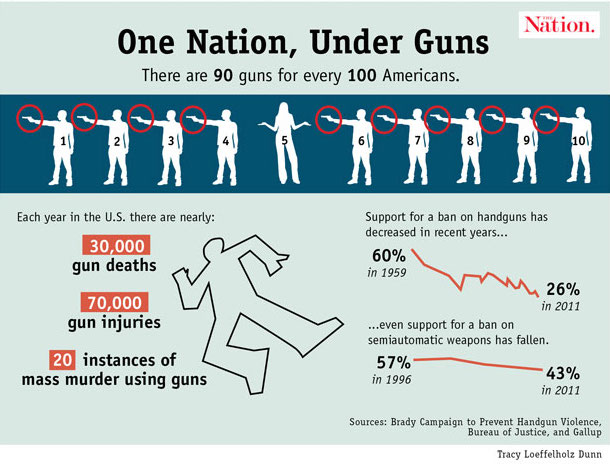
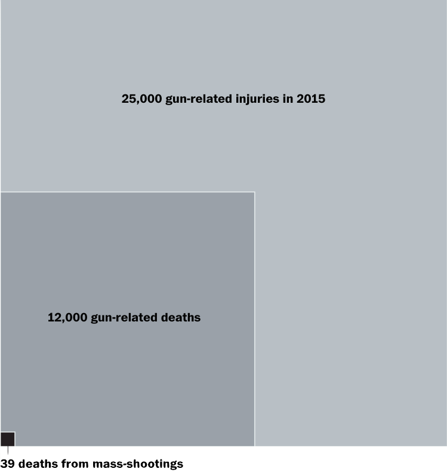
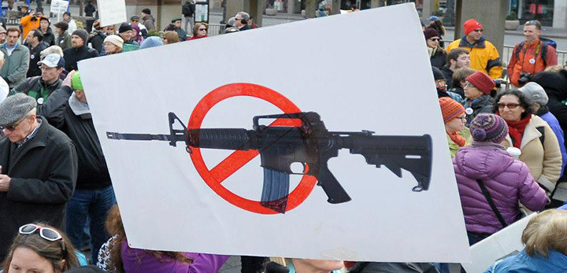

The United States has the highest number of guns per capita in the world, with 89 firearms per 100 people.

In 2015, over 12,000 people were killed by guns.

40% of gun sales are made without a background check.

Gun violence is the primary killer of African-Americans between the ages of 15 and 34.
